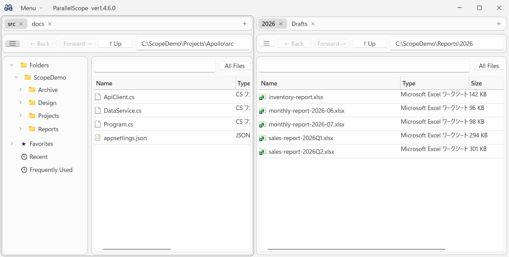
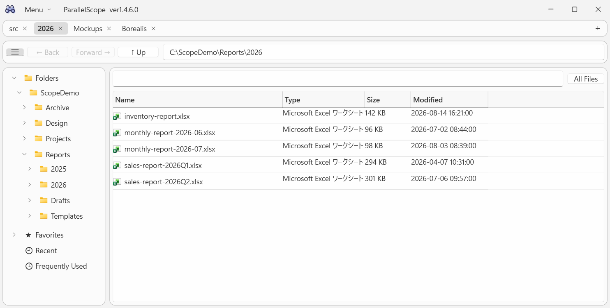

Every folder you care about,
in one tree.
ParallelScope is a Windows file browser for folders spread across drives and NAS devices. Register them once, then browse and search them all together — results appear as you type.
Free to use · Windows 10 / 11 · Open source

Several roots, one tree
Folders on different drives and NAS devices sit side by side in a single tree.
Search as you type
Search runs against a local cache, so even a NAS answers instantly.
Works when the network doesn't
Roots you cannot reach right now can still be browsed and searched from the cache.
Find files the moment you type
Type in the search box and everything under the current folder is narrowed down on every keystroke — no Enter key, no waiting for a live disk crawl.
Background scans at startup, on a schedule, and whenever you open a folder keep the cache up to date.

Everything underneath, in one list
Turn on All Files to flatten every file below the current folder into a single list, however deep it goes. Folder sizes are shown too, so you can see what is eating your space.

Tabs and split view Plus
Keep several folders open in tabs, or split the window into two panes to compare folders that live far apart. Drag a tab to the other side to move it. Your layout comes back the next time you start.

A right-click away
Copy a file, its name, or its full path in one click, or open its parent folder in Explorer. Right-click a folder in the tree to rescan just that part.

Light, dark, English, Japanese
Pick a color theme and a display language; both apply the moment you choose them and follow your Windows settings by default.

Free, with an optional Plus
Browsing, search, All Files mode and scanning are free. ParallelScope Plus is a Microsoft Store add-on, offered as a monthly subscription or a one-time purchase — both unlock exactly the same features.
Free
- Multiple root folders and excluded folders
- Incremental search across roots
- All Files mode and folder sizes
- Scheduled and per-folder scans
- Themes, display language, hidden/system items
Plus
- Monthly subscription
- ¥300 / monthThe first week is a free trial
- One-time purchase
- ¥3,050Pay once, no further charges
Prices are for the Japan Store; the Microsoft Store shows the price for your region.
- Multiple tabs and split view
- ★ Favorites, 🕘 Recent, 🕒 Frequently Used
- Custom file list columns
- Regular expression search
- In-memory file name index for faster search
- CSV export of the current list
Your files stay on your PC
Everything is processed locally. The cache and settings live in the app's own data folder, nothing is uploaded, and the full source code is public on GitHub.